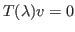

We study preconditioned eigensolvers for large-scale nonlinear Hermitian eigenproblems of the form

that admit the min-max principle of eigenvalues. For the computation of a small number of extreme eigenvalues, we propose variants of preconditioned conjugate gradient (PCG) methods. These algorithms are natural extensions of PCG-like methods for linear Hermitian eigenproblems. To compute a large number of eigenvalues, we explore a new solver called the preconditioned locally minimal residual (PLMR) method. With stable preconditioners that enhance eigenvalues in desired parts of the spectrum, this algorithm only requires deflation of a small set of recently converged eigenvalues, and its arithmetic and CPU time cost increase linearly with the number of desired eigenvalues. Numerical experiments illustrate the efficiency of these algorithms.